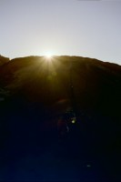

Caroline and Helen's Round-the-World Trip
Chile (take 2)
May
Back in Chile, this time in the North
Please click on a thumbnail to view the full size picture
|
North Chile Sunset in San Pedro de Atacama |
Ruins of the Pukara (fort) looking down over San Pedro |

View over the valley, towards the salar |
|
 Sunset from the Devil's Saddle (large sand dune), Valle de la Lune |
Valle de la Lune (Valley of the Moon) |
Kate & I on the Devil's Saddle, Valle de la Lune |
|
Celebratory football parade, Calama (no idea what they won!) |
Statue to the miners, Calama high street |